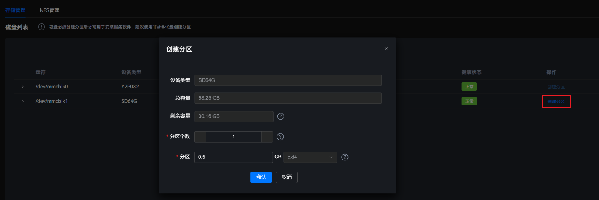
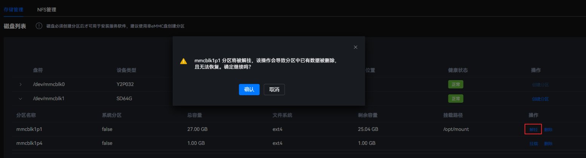

参数说明
参数名称 |
参数说明 |
|---|---|
盘符 |
磁盘所在位置 |
设备类型 |
当前设备类型 |
总容量 |
设备的总容量 |
接口类型 |
设备接口类型 |
位置 |
设备所在位置 |
健康状态 |
设备的健康状态 |
操作 |
对磁盘进行的操作 |
查看磁盘列表信息
- 在主菜单中选择。图1 存储管理

- 在磁盘列表区域，选择需要查看的磁盘条目，单击条目前的
 。
。在展开的区域中，显示分区名称、系统分区、总容量、文件系统、剩余容量和挂载路径等信息。
图2 本地磁盘详细信息
创建分区
建议用户创建独立的分区，用于挂载/var/lib/docker；在部署容器应用时，确保该容器应用不超过挂载了/var/lib/docker的分区总容量的90%。

由于磁盘的厂商和磁盘类型之间存在差异，可能导致创建磁盘时间的差异。例如存在创建磁盘时间过长，导致页面出现操作失败的提示但实际创建成功的场景。
- 在主菜单中选择。图3 存储管理
- 在磁盘列表区域，单击磁盘“操作”列的“创建分区”，弹出“创建分区”窗口。图4 创建分区
 - 配置创建分区参数。图5 配置分区参数

表2 创建分区参数 参数名称
参数说明
设备类型
当前设备类型。
总容量
设备的总容量。
剩余容量
设备的剩余容量。
说明：由于磁盘分区碎片化，剩余容量可能是非连续分布，因此即使创建小于剩余容量的分区，也可能会提示磁盘容量不足而创建分区失败。
分区个数
选择所要的分区个数。最多可选择16个分区。
分区
包括分区容量和文件系统。- 分区容量：最大容量不超过剩余空闲容量，容量大小的单位为GB，最小值为0.5GB，必须是0.5GB的整数倍且最多一位小数。
- 文件系统：当前仅支持ext4。
- 单击“确认”。
删除分区

- 删除分区，将导致该分区中已有数据被删除，且无法恢复，请谨慎操作。
- 删除分区时，需保证该分区上没有业务或业务已经停止；否则可能导致被删除的分区异常。
- 在主菜单中选择。图6 存储管理
- 在磁盘列表区域，选择需要查看的磁盘条目，单击条目前的
 ，展开分区列表信息。图7 本地磁盘详细信息
，展开分区列表信息。图7 本地磁盘详细信息
- 单击待删除条目后的“删除”，弹出操作确认提示框。图8 删除磁盘条目

- 单击“确认”。
挂载分区
eMMC不能频繁进行写操作，否则会造成eMMC不可用、导致整机不能使用。
- 在主菜单中选择。图9 存储管理
- 在磁盘列表区域，选择需要查看的磁盘条目，单击条目前的，展开分区列表信息。图10 本地磁盘详细信息
- 单击待挂载条目后的“挂载”，弹出“挂载分区”对话框。图11 挂载分区

- 输入挂载路径。
- 挂载路径格式要求：最大长度为256个字符，可由数字、字母和-/_任意字符组成，必须以“/”开头，不能包含空格。
- 默认可输入的挂载路径为“/opt/mount/”。若用户想在其他路径下挂载，需要先执行/usr/local/mindx/MindXOM/tools/mount_white_path add Absolute_Path命令，将挂载路径手动添加到白名单中。具体处理方式请参见mount_white_path命令。
- 挂载路径不能为已有挂载路径的子目录。
- 挂载路径不能在系统中存在。
如果挂载失败，则该分区可能被损坏。请删除该分区，然后重新创建分区。
- 单击“确认”。
挂载点目录的默认权限为755。用户可通过登录develop模式下执行chmod命令来修改权限。
解除挂载
解除挂载会导致已挂载到该分区的容器应用不可用，请谨慎操作。
- 在主菜单中选择。图12 存储管理
- 在磁盘列表区域，选择需要查看的磁盘条目，单击条目前的
 ，展开分区列表信息。图13 本地磁盘详细信息
，展开分区列表信息。图13 本地磁盘详细信息 - 单击待解挂条目后的“解挂”，弹出操作确认提示框。图14 解除挂载
 - 单击“确认”。